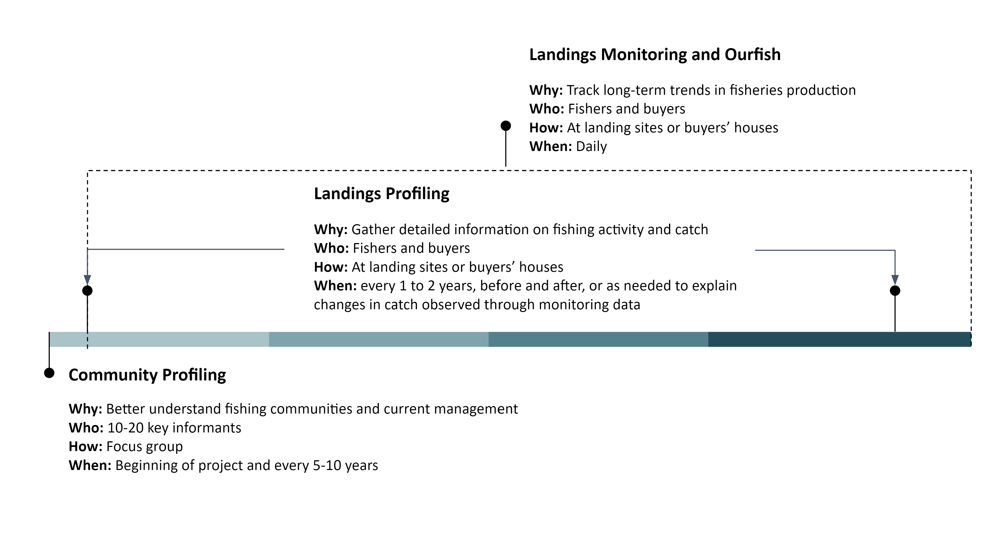
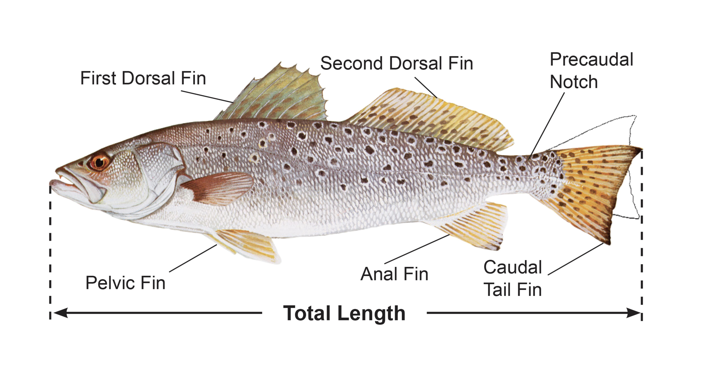
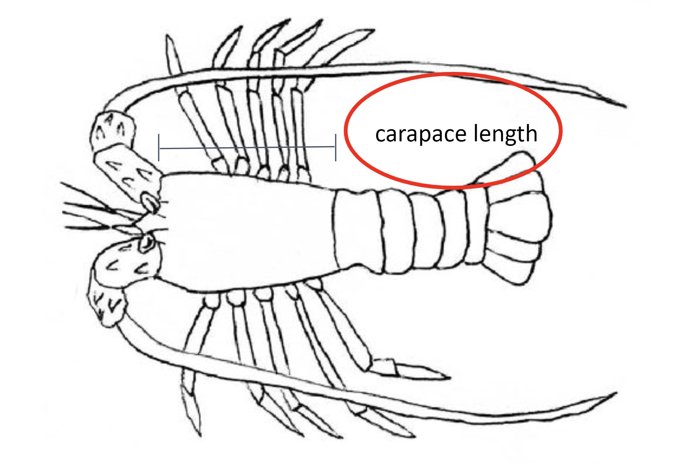
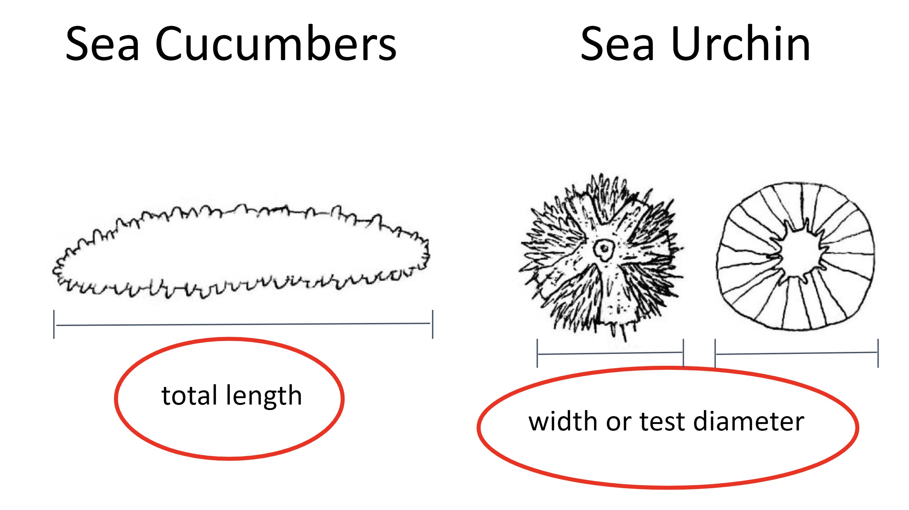

Mwongozo Kamili
Mwongozo Wa Ukusanyaji Wa Takwimu Za Uvuvi
Mwongozo wa kusimamia/kufanya tafiti ili kupata takwimu za uvuvi
Utangulizi
Nakala hii inatoa mwongozo na mapendekezo kwa ajili ya kusimamia fomu tatu za utafiti ili kukusanya taarifa kuhusu jamii za uvuvi na uvuvi wanaotegemea (Mchoro 1). Fomu hizi zilibuniwa/zilitengenezwa ili kuendana na jinsi takwimu zitakavyotumika na mabadiliko yanayotarajiwa mara kwa mara. Utafiti wa juu zaidi, Utafiti wa Kijamii, una maswali yanayosaidia kujenga uelewa bora wa shughuli za uvuvi katika jamii na hali za kiuchumi. Kuelewa hali ya kiuchumi ni muhimu sana wakati kazi inaanza kwa mara ya kwanza katika jamii. Taarifa zinazokusanywa wakati wa utafiti huu ni muhimu kwa kubuni mikakati ya jinsi ya kushirikisha jamii na mipango ya kuchukuwa sampuli za takwimu. Tafiti za Ufuatiliaji wa Kutua na Ufuatiliaji wa Uvuvi hukusanya takwimu kuhusu samaki wanaotua na uvuvi. Takwimu ya kuprofaili Ufuatiliaji wa Kutua hukusanywa kwa nadra na hutoa taarifa kuhusu makazi ya samaki, aina ya vifaa/zana, jitihada, na urefu binafsi wa samaki. Utafiti wa Ufuatiliaji wa Uvuvi, ambao unapaswa kufanyika kila siku, ni utafiti wa haraka wa uvuvi unaokusanya kiwango kidogo cha taarifa zinazohitajika kufuatilia mabadiliko ya kiasi na thamani ya samaki, kama vile aina, uzito, idadi na bei.

Mchoro 1: Ratiba Ya wakati wa kusimamia/kufanya fomu tatu tofauti za uchunguzi kwa kiwango cha mwaka mmoja.
Maelezo Ya Utafiti
Utafiti Wa Profaili Ya Jamii
Lengo
Elewa mandhari ya jumla ya jamii na uvuvi unaofanyika ndani ya jamii
Takwimu Zilizokusanywa
Idadi ya wanajamii, wavuvi, wafanyabiashara wa samaki, wanawake
Mandhari/mazingira ya jumla ya uvuvi unaofanyika ndani ya jamii
Zana/nyenzo zinazotumika; aina samaki zinazolengwa; makazi ya samaki; misimu; vyombo
Habari juu ya juhudi za uvuvi na gharama
Maoni/mitazamo juu ya uvuvi na hali ya makazi, vitisho/tishio
Taarifa kuhusu usimamizi/sheria za sasa za uvuvi
Tambua (kupitia ramani) ya maeneo muhimu ya uvuvi, makazi, maeneo ya kutua
Kundi lengwa
10-20 watoa habari muhimu ndani ya jamii, yaani, viongozi wa jamii, wavuvi wanaoheshimiwa, wafanyabiashara wa samaki, na wanawake.
Mara na Wakati
Wakati kazi inaanza katika jamii mpya ya uvuvi, kufanya Utafiti wa kuprofaili jamii na zoezi la awali la utambuzi hutoa takwimu za msingi na taarifa husika za kubuni juhudi za uhifadhi na usimamizi zinazofaa zaidi kwa jamii hiyo. Kurudia Utafiti huu unaweza kusaidia kuandika mabadiliko makubwa yanayotokea kwa muda.
Mbinu
Taarifa zinaweza kukusanywa kupitia tafiti za wahusika tofauti (kwa mfano, sensa, rekodi za idara ya uvuvi, n.k.), vikundi vya majadiliano vinavyoundwa na wanajamii muhimu 10-20 au watoa taarifa muhimu. Viongozi wa jamii pamoja na wavuvi mbalimbali na wafanyabiashara wa samaki wenye ujuzi na anuwai (ikiwemo wanawake na vijana) ndio washiriki bora wa kujumuishwa katika kikundi majadiliano/mahojiano. Katika kuwezesha vikundi vya majadiliano, inashauriwa kuwa na, angalau, kiongozi wa majadaliano na mwandishi wa majadiliano. Katika kikundi cha majadiliano, pia inashauriwa washiriki kutoa orodha ya/mawasiliano ya wavuvi katika jamii ambao wanaweza kuwasiliana nao ili kufanya Tafiti za Kaya. Ikiwa haiwezekani kufanya Utafiti wa Kijamii katika mfumo wa kikundi cha majadiliano/mahojiano, njia mbadala ni kufanya maswali hayo hayo kama tafiti za mtu binafsi na watoa taarifa muhimu na kujumuisha majibu. Maswali yanayojumuishwa katika utafiti wa kijamii na mapendekezo ya kufanya majadiliano ya vikundi yanaweza kupatikana katika Kiambatisho hapa chini.
Utafiti wa Ufuatiliaji wa Kutua
Lengo
Kukusanya taarifa muhimu zinazohitajika kuhesabu viashiria rahisi vya afya ya uvuvi kulingana na urefu na kufuatilia mabadiliko katika uzalishaji wa uvuvi, thamani, na muundo wake.
Takwimu Zilizokusanywa
Tarehe imefika/imetua
Mahali pa kutua
Jina la mfanyabiashara wa samaki
Jina la Mvuvi
Jitihada za uvuvi (siku za uvuvi/wavunaji)
Utambulisho wa spishi (majina ya kawaida, ya kawaida, ya kisayansi)
Jumla ya hesabu
Jumla ya uzito
Jumla ya bei
Sababu jumla ya pato halikuuzwa, kama inawezekana
Kundi lengwa
Wavuvi wanapotua samaki wao au kwenye nyumba ya wanunuzi wa samaki/soko.
Mara na Wakati
Utafiti wa Ufuatiliaji wa Kutua unapaswa kufanywa kila siku au mara nyingi iwezekanavyo. Fanya Utafiti wa Ufuatiliaji wa Kutua kabla na baada ya utekelezaji ili kutathmini athari za kufunga eneo/maeneo ya uvuvi au mikakati mingine ya usimamizi. Tunapendekeza kukusanya data siku 30 kabla na baada ya kipindi cha kufungwa cha muda. Katika siku saba za mwanzo za vya kuchukuwa sampuli, tunapendekeza wachukuwa takwimu kufanya Utafiti wa Ufuatiliaji wa Kutua kila siku. Ikiwezekana, endelea na ufuatiliaji wa kila siku kwa kipindi cha siku 30 nzima. Ikiwa hii haiwezekani, fanya utafiti angalau 80% ya siku ndani ya kila siku 30. Pia tunapendekeza kufanya utafiti wa angalau 80% au zaidi ya wavuvi wote wanaotua samaki siku fulani kabla au baada ya kufungwa. Gawa kwa usawa wanaosaidia katika utafiti kati ya wavuvi wa mashua na wasio wa mashua. Kusanya takwimu kutoka kwa wavuvi wote wanaotua katika kijiji, bila kujali ikiwa walikuwa wanavua ndani ya eneo lililofungwa au la
Kwa ajili ya kufunga kwa muda mrefu, hakikisha kwamba takwimu inakusanywa wakati wa mwezi uleule kila mwaka ili kuona mabadiliko katika kipindi cha kufungwa. Ikiwa hilo halitawezekana, tunapendekeza kukusanya takwimu wakati wa mwezi uleule kabla na baada ya kufungwa. Kama ilivyotajwa hapo juu, tunapendekeza kufanya utafiti angalau 80% ya siku ndani ya mwezi na 80% ya wavuvi wanaopatua samaki kila siku
Mbinu
Kutumia Fomu Ya Kobo, kutana na wavuvi kwenye maeneo ya kutua/nyumba za wanunuzi kurekodi mapato yao.
Utafiti wa Profaili ya Kutua
Lengo
Kuelewa mwelekeo wa mapato ya samaki waliorekodiwa.
Takwimu Zilizokusanywa
Tarehe imefika/imetua
Mahali pa kutua
Maeneo Msingi ya uvuvi
Jina la mfanyabiashara wa samaki
Jina la Fisher
Jitihada za uvuvi (masaa na siku za uvuvi/kuvuna)
Aina ya chombo (nambari ya usajili ya chombo, nambari ya wafanyakazi)
Utambulisho wa spishi (majina ya kawaida, ya kawaida, ya kisayansi)
Zana/nyenzo iliyotumika
Mazingira ya uvuvi
Jumla ya hesabu
Jumla ya uzito
Jumla ya bei
Sababu pato lote la samaki halikuuzwa, kama inawezekana
Sampuli za uzito na urefu binafsi (Mchoro 2-8)
Takwimu ya sampuli maalum ya shirika (jinsia, ubora wa pato, gonads, stylet, # mitego, nk.)
Kundi lengwa
Sampuli ya uwakilishi wa mapato ndani ya jamii. Rekodi angalau sampuli 50 (ikiwezekana sampuli 100) kwa kila spishi lengwa, ikiwakilisha aina mbalimbali za zana na profaili za wavuvi
Mara na Wakati
Utafiti huu unapaswa kufanyika mwanzoni mwa ushiriki katika jamii na baadaye kufanywa kila baada ya miaka miwili, kabla na baada ya kutekeleza mkakati wa usimamizi, au kama inahitajika kuelezea kupungua kwa kuchunguza kupitia data ya ufuatiliaji. Kwa kutumia Fomu Ya Kobo, kutana na wavuvi kwenye maeneo ya kutua ili kuchukua sampuli ya samaki wao na kurekodi shughuli zao za uvuvi.
Mbinu
Kwa kutumia Fomu Ya Kobo, kutana na wavuvi kwenye maeneo ya kutua ili kuchukua sampuli ya samaki wao na kurekodi shughuli zao za uvuvi.
Usawasishaji wa kipimo: Aina Ya Urefu wa kupima kwa kikundi cha spishi

Kielezo 2: Urefu wa jumla unapaswa kutumika kupima samaki wa mapezi, papa na mikunga (AFS).

Kielelezo 3: Upana wa diski unapaswa kutumika kupima taa na sketi

Kielelezo 4: Upana wa gamba unapaswa kutumika wakati wa kupima kaa (Suryandari et. al, 2018).

Kielelezo 5: Urefu Wa Vazi unapaswa kutumika wakati wa kupima pweza na ngisi (FAO).

Kielelezo 6: urefu Wa Gamba unapaswa kutumika wakati wa kupima kamba na kamba mawe (Hart et al. 2001).

Kielelezo 7: Urefu unapaswa kutumika wakati wa kupima samakigamba na konokono.

Kielelezo 8: Urefu wa jumla unapaswa kutumika wakati wa kupima jongoo. Upana au kipenyo cha gamba kinapaswa kutumika wakati wa kupima mapoe
Muhtasari Wa Mtiririko Wa Takwimu
Ukusanyaji wa takwimu, uthibitishaji, mabadiliko, na muonekano/taswira ni vipengele vinne vikuu vya mfumo wa takwimu. Programu kuu zinazotumika ni KoboToolBox, Smartsheet, PostgreSQL, na R.
KoboToolBox ni programu huru na ya chanzo huria ambayo ni zana yenye nguvu kwa ukusanyaji wa takwimu inayopatikana kupitia mazingira magumu na majukwaa mengi, kama vile rununu, tarakilishi, na karatasi. Wakusanyaji takwimu hukusanya data kuhusu hali za kijamii na kiikolojia muhimu kwa kutathmini jamii za wavuvi na hali kupitia maswali ya uchunguzi ya kwenye KoboToolBox. Smartsheet ni jukwaa la usimamizi wa kazi kwa kushirikiana ambalo hutoa njia rahisi na angavu kwa mashirika kupanga, kufuatilia, kuendesha kiotomatiki, na kusimamia miradi na michakato mbalimbali kwa wakati halisi. Faili za marejeleo/kumbukumbu zinazotumika kujaza fomu za uchunguzi na kuunganisha takwimu za ziada kwenye seti kuu za data zinafanyika katika Smartsheet. Zaidi ya hayo, data inathibitishwa katika Smartsheet. PostgreSQL ni mfumo wa usimamizi wa hifadhidata wa bure unaotumika kama ghala la takwimu kwa programu nyingi za tuvuti, uchambuzi, na geospatial huku ukihifadhi data isiyosafishwa na iliyosafishwa katika sehemu moja. R ni mazingira ya programu ya chanzo na lugha ya programu inayotumika sana kwa sayansi ya takwimu, hesabu za takwimu, na taswira/muonekano wa takwimu. Dashibodi za takwimu zinajengwa kwa kutumia kifurushi cha Shiny kutoka lugha ya programu ya R na kuhifadhiwa kwenye shinyapps.io, jukwaa kama huduma (PaaS) kwa ajili ya kuweka programu za wavuti za Shiny

Kielelezo 9: Mchoro Wa Mtiririko Wa Takwimu
Ukusanyaji wa data unahusisha kukusanya na kupima taarifa kutoka kwa vyanzo husika kuhusu vipengele vinavyovutia kwa ajili ya kufanya maamuzi, upangaji wa mikakati, tathmini za matokeo, na madhumuni mengine. Kwa kuingiza data za kiasi na za ubora kwenye maswali ya uchunguzi, tunakuza uelewa wa kina wa hali ya kiuchumi na ikolojia inayohusishwa na jumuiya za wavuvi na kubadilisha mikakati ya usimamizi. Uthibitishaji wa takwimu unarejelea matumizi ya mbinu za kupima hali ya takwimu iliyokusanywa na kuamua ikiwa takwimu iliyokusanywa inakidhi vigezo vya ubora vilivyobainishwa, kama vile usahihi, uthabiti, umuhimu, ukamilifu, na upekee. Ubadilishaji wa takwimu hubadilisha, kusafisha, na kupanga takwimu katika muundo unaoweza kutumika kuchambuliwa na kutathminiwa kwa ajili ya kufanya maamuzi. Uchambuzi na taswira ya takwimu inahusisha kubuni na kuunda michoro inayopatikana au maonyesho ya taarifa kwa ufanisi ili kuwasilisha takwimu za kiasi na ubora changamano zilizokusanywa, kuthibitishwa, na kubadilishwa hapo awali kwa hadhira lengwa. Tumeielezea mchakato wa mtiririko wa data hapa chini:
Takwimu hukusanywa kupitia fomu Za utafiti kwa KoboToolBox.
Takwimu huvutwa kwenye hifadhidata
Ikiwa mkusanya takwimu alichagua majibu yaliyotangulia kujazwa katika uchunguzi, data haihitaji kuthibitishwa na inaweza kwenda moja kwa moja kwenye mchakato wa uchambuzi na taswira ya takwimu
Mkusanya takwimu akiongeza takwimu kama vile mvuvi mpya, mnunuzi, mkusanyaji wa takwimu, mahali pa kutua, au spishi, takwimu inathibitishwa katika Smartsheet kabla ya kuwekwa kwenye jedwali ya mwisho ya takwimu na kuonyeshwa kwenye dashibodi. Viongozi wa wanaokusanya takwimu wanapewa taarifa kupitia barua pepe wakati takwimu inapokuwa tayari kwa uthibitishaji. Viongozi watathmini jedwali ya udhibiti wa ubora ili kuhakikisha kuwa habari mpya iliyowekwa ni sahihi.
Baada ya kuthibitisha, takwimu mpya inapelekwa kwenye faili za marejeleo na kurudishwa kwenye hifadhidata kwa ajili ya ubadilishaji wa mwisho kabla ya uchambuzi na taswira
Baada ya takwimu kupelekwa kwenye faili za marejeleo, viongozi wa timu watapewa taarifa kupitia barua pepe ikiwa kuna habari zaidi inayohitajika kwenye faili za marejeleo
Faili za marejeleo zilizosasishwa kisha huwekwa kwenye jukwaa la KoboToolBox ili ziweze kujumuishwa katika fomu
Takwimu iliyosasishwa kutoka kwenye faili za marejeleo pia hutumiwa katika mchakato wa kubadilisha data ili kuunganisha uga wa ziada wa takwimu kama vile vipimo na jinsia..
Hatua za mwisho za mchakato wa ubadilishaji wa takwimu huleta jedwali kuu la matokeo ambayo hutumiwa kwa uchambuzi wa takwimu na taswira katika dashibodi za takwimu.
Dashibodi ya takwimu (yaani programu za Shiny) huunganishwa moja kwa moja na hifadhidata, zikitoa takwimu iliyosasishwa zaidi inayopatikana, hivyo kutoa washirika ufikiaji karibu wa takwimu halisi na takwimu iliyotolewa kwa muhtasari.
Usalama Wa takwimu
Hapa chini ni orodha ya majukwaa ya programu ambapo takwimu inaweza kuhifadhiwa na kusafirishwa wakati inapotoka kwenye hifadhidata. Taarifa za usalama wa takwimu kwa kila jukwaa la nje zinapatikana kwenye tovuti maalum ya jukwaa iliyounganishwa hapa.
Taratibu za ziada za usalama zilitekelezwa, pamoja na hatua za usalama za data zilizotolewa na majukwaa ya programu hapo juu. Akaunti zote kwenye mifumo yote ya programu zinazotumiwa zinalindwa kwa nenosiri.
Tunatumia Github kama mfumo wetu wa udhibiti wa toleo kwa bidhaa zetu zilizoprogramiwa. Kwa chaguo-msingi, folda na miradi yote yenye takwimu za uvuvi na kiuchumi zinapatikana kwa faragha hufikiwa tu na wafanyakazi na wakandarasi.
Kutoka kwenye majukwaa yoyote ya takwimu yaliyosambazwa (k.m. Programu za Shiny), uthibitisho wa mtumiaji unahitajika ili kuona au kupakua takwimu, kulingana na makubaliano ya kushirikisha takwimu yaliyochaguliwa na kila shirika. Hii ni pamoja na kuthibitisha watumiaji kabla ya kuruhusu takwimu kuonekana au kupakuliwa, watumiaji kuingia kwenye majukwaa ya taswira ya data, na usimamizi wa kawaida wa watumiaji waliothibitishwa.
Upatikanaji wa nyaraka za Smartsheet (k.m. faili za marejeleo, jedwali uthibitishaji wa takwimu) umeruhusiwa tu kwa wafanyakazi waliothibitishwa na kila shirika, na kila mshirika anaweza kuona taarifa yao maalum ya mshirika pekee. Walioruhisiwa tena ni wafanyakazi ambao wanadhibiti na kusaidia mchakato wa ubora wa takwimu, na wafanyakazi wa Blue Ventures ambao wanaisaidia washirika na mchakato wa taarifa kwenye Smartsheet.
Faragha Ya Takwimu
Maelezo ya kibinafsi yanayotambulika na takwimu ya mapato ya uvuvi inamilikiwa na wavuvi na wanunuzi wa samaki na kamwe haitashirikishwa bila idhini ya awali. Ili kulinda faragha ya wavuvi, wanunuzi, na wakusanyaji wa takwimu, majina yote huwekwa kuwa nambari za kitambulisho zisizojulikana. Hivyo basi, takwimu yote iliyo kwa sehemu au kwa jumla itajumuisha nambari za kitambulisho zisizo na mpangilio. Tafadhali angalia sehemu kuhusu makubaliano ya kushiriki data kwa maelezo kamili kuhusu makubaliano ya kushiriki takwimu
Data inayohesabiwa kuwa Maelezo ya kibinafsi yanayotambulika (PII) ni pamoja NA:
Majina ya wavuvi, wanunuzi, na wachukua takwimu
Majina ya waliohojiwa kwa tafiti zozote
Kushiriki Data
Mfumo wa data ya uvuvi umetengenezwa ili kuboresha matumizi ya takwimu yako na kutoa jukwaa kwa ushiriki wako wa moja kwa moja katika juhudi za usimamizi wa uvuvi na uhifadhi wa kina. Takwimu iliyokusanywa kwa ushirikiano kutoka kwa washirika inaweza kutoa ufahamu mkubwa kwa ufuatiliaji wa uvuvi, kutathmini mikakati ya usimamizi, kusaidia katika kufanya maamuzi kwenye viwango vya kijamii na kitaifa, kuelewa mabadiliko ya kikanda, na kutambua huduma za kifedha zinazowezekana.
Tunatambua umuhimu mkubwa wa umiliki na matumizi ya takwimu kwa washirika wote wanaochangia. Lengo letu ni kukupa uhuru wa kusimamia na kuamua jinsi takwimu yako inavyotumiwa. Kwa kuchagua moja ya viwango vitatu vya idhini ya matumizi ya takwimu, unaweza kusimamia kiwango ambacho takwimu yako inashirikishwa na watumiaji wengine. Unaweza kubadilisha viwango vya idhini kulingana na aina za takwimu, na muhimu zaidi, una uhuru wa kurekebisha kiwango cha idhini ya takwimu wakati wowote. Maelezo ya kibinafsi yanayotambulika (PII) na takwimu ya mapato ya uvuvi inamilikiwa na wavuvi na wanunuzi wa samaki na kamwe haitashirikishwa bila idhini ya awali. Kwa kuchagua kiwango cha idhini ya matumizi ya takwimu, unathibitisha kuwa idhini binafsi imetolewa na wavuvi na wanunuzi wa samaki.
Data yote kwa sasa imewekwa kwenye Kiwango 1 - Binafsi. Watumiaji watapata fursa ya kurekebisha viwango vyao vya idhini kama inavyohitajika
Kiwango Cha 1-Binafsi
Takwimu ni kwa matumizi ya ndani tu ya mtoaji wa awali wa takwimu
Takwimu zitapatikana kwa kupakuliwa na mtoaji wa awali wa takwimu.
Takwimu hazitajumuishwa katika uchambuzi wa kikanda uliotolewa kwenye dashibodi.
Kugawana au usambazaji usioidhinishwa wa takwimu kwa watu/mashirika ya nje ni marufuku kabisa.
Kiwango cha 2-Shiriki Na Wachangiaji Wengine Wa Takwimu
Takwimu ya ngazi inapatikana kwa washiriki wengine wa takwimu kupakua
Muhtasari wa Takwimu na taswira zitapatikana kwa wachangiaji wengine.
Takwimu zitajumuishwa katika uchambuzi wa kikanda kwenye dashibodi.
Kiwango cha 3-Shiriki Na Watumiaji Wote
Takwimu ya kiwango inapatikana kwa watumiaji wote kupakua.
Muhtasari wa Takwimu na taswira zitapatikana kwa watumiaji wote.
Takwimu zitajumuishwa katika uchambuzi wa kikanda kwenye dashibodi.
Mtoaji halisi wa takwimu anaweza kubainisha vikwazo au masharti yoyote ya matumizi yanayofaa kwa watumiaji wote
Kuthibitisha Takwimu Mpya na Iliyobainishwa
Katika tafiti, baadhi ya maswali huruhusu wakusanyaji takwimu kuongeza mvuvi mpya, mnunuzi, mkusanyaji wa takwimu, mahali pa kutua, spishi, au “nyingine.” Taarifa kutoka chaguo hizi ni hatua mpya za takwimu na lazima zithibitishwe kabla ya kujumuishwa kwenye seti ya mwisho ya takwimu, kuonyeshwa kwenye dashibodi, na kuongezwa kwenye faili za marejeleo. Pia kuna vikwazo vilivyowekwa kuhusu uzito, bei, na urefu wa spishi, na ikiwa data iliyokusanywa iko chini au juu ya vikwazo hivi, nambari hizi zinabandikwa kwa ajili ya kuangaliwa. Vikwazo vya uzito na bei vinawekwa na washirika katika min_max_ref. Vikwazo vya urefu wa spishi huthibitishwa na timu kwa kutumia vigezo vya kibayolojia.
Takwimu yote inayopitia mfumo wa data za uvuvi inathibitishwa katika Smartsheet. Kuingizwa kwa vipengele vipya au vilivyobainishwa hivyo huchukuliwa kwenye jedwali la uthibitisho katika Smartsheet ili timu za uwanjani zithibitishe. jedwali la uthibitisho wa ubora ni maalum kwa washirika na inaweza kupatikana kupitia ombi la sasisho lililotumwa kwa barua pepe yako au kwa kutembelea viungo vya Maoni ya Dynamic View uliyopewa. Viongozi wa timu za uwanjani watapewa taarifa kupitia barua pepe wakati data inahitaji kuthibitishwa katika Jedwali ya udhibiti na ubora. Baada ya takwimu kuthibitishwa katika jedwali la uthibitisho, tutaweka taarifa mpya kwenye faili za marejeleo na kutoa marekebisho muhimu kwenye seti kuu ya takwimu.
Maagizo maalum, ya hatua kwa hatua ya jinsi ya kukamilisha uthibitishaji wa takwimu Katika Smartsheet yanaweza kupatikana kwenye ukurasa wa Uthibitishaji Wa takwimu.
Ukusanyaji Wa Takwimu
Blue Ventures inasaidia kufanya utafiti wote kupitia fomu za Kobo Toolbox ambazo zinaweza kushirikishwa kupitia akaunti ya Kobo Toolbox. Unaweza kuunda akaunti kwenye https://kf.kobotoolbox.org/accounts/signup/. Tafadhali wasiliana na timu na jina lako la mtumiaji na maelezo ya akaunti yako. Mara baada ya kushirikishwa katika utafiti, unaweza kupata fomu za Kobo kupitia programu ya bure ya simu ya Android ya KoboCollect au kupitia fomu ya mtandao ya Enketo. Maelekezo ya kina kuhusu jinsi ya kuunda akaunti ya Kobo, kukusanya data, na kuwasilisha takwimu yanapatikana kwenye ukurasa wa Kuweka Kobo. Tumia nambari ya QR kuweka mipangilio ya vifaa vyote baada ya kuweka kwa simu ya kwanza ili kuweka vifaa vingi chini ya akaunti moja ya ukusanyaji wa data. Kuweka kifaa cha kwanza kunahitaji URL ya seva ya Kobo, jina la mtumiaji, na nambari ya siri. URL ya seva ya Kobo ni https://kc.kobotoolbox.org. Taarifa zaidi kuhusu kuweka ukusanyaji wa data na Kobo, ikiwa ni pamoja na jinsi ya kuweka vifaa vingi vya ukusanyaji wa takwimu kupitia nambari ya QR, zinapatikana kwenye https://support.kobotoolbox.org/.
Baada ya kupakua KoboCollect, fungua programu na ingiza URL ya seva, jina la mtumiaji, na nambari ya siri ili kuunganisha programu yako ya KoboCollect na seva ya KoboToolbox. Kuunganisha programu ya KoboCollect na seva ya KoboToolbox kunaruhusu kupakua fomu zilizotekelezwa kutoka KoboToolbox kwenye kifaa chako cha simu na kutuma takwimu iliyokusanywa kupitia programu kurudi kwenye seva. Kwenye skrini, chagua “Pata Fomu Tupu.” Orodha ya fomu zako zilizotekelezwa zinapaswa kuonekana. Bonyeza “Chagua Zote” ili kupata fomu zote za utafiti kutumwa kwenye programu, au chagua zile unazotaka kwa kubonyeza moja moja. Kisha bonyeza “Pata zilizochaguliwa.” Kwa kufanya utafiti, chagua “Jaza Fomu Tupu.”
Wakati fomu ya mtandao inasasishwa moja kwa moja wakati toleo jipya la utafiti linapopatikana, watumiaji wanapaswa kuchagua “sasisho moja kwa moja” wenyewe kwenye program za simu zao. Kusasisha mara kwa mara utafiti kwenye programu huhakikisha matumizi ya toleo jipya la fomu na kuepuka matatizo katika mtiririko wa takwimu. Unaweza kuweka sasisho ya moja kwa moja kwenye programu kwa kwenda kwenye “Vipimo” na “Usimamizi wa Fomu.” Maelezo zaidi kuhusu kusasisha uchunguzi moja kwa moja kwenye programu yanapatikana kwenye ukurasa wa Kuweka Kobo. Ni muhimu kuzingatia kuwa mtandao unahitajika ili programu ipate toleo karibuni la utafiti, hata kama mipangilio ya sasisho ya moja kwa moja imesajiliwa. Hivyo basi, wahimize wakusanyaji takwimu kuwa na intaneti kabla ya kuanza kazi za uwanjani ili KoboCollect iweze kupata toleo la hivi karibuni.
Baada ya kukusanya takwimu, utafiti uliotumwa kupitia fomu ya mtandao utatumwa moja kwa moja kwenye seva mara tu mkusanyaji wa data atakapobonyeza kitufe cha “Wasilisha.” Takwimu iliyokusanywa kupitia programu ya KoboCollect kwanza huokolewa kwenye programu katika sehemu ya kuhifadhi na kisha kutumwa kwenye seva. Fomu zilizokamilika zinasalia kwenye hifadhi kabla ya kuwasilishwa kwenye seva ili wakusanyaji wa takwimu waweze kufanya marekebisho ya uchunguzi baada ya kukusanya takwimu, au ikiwa hakuna intaneti, programu inaweza kuhifadhi utafiti na kisha kuwasilisha kwenye seva mara tu intaneti unapopatikana. Hasa, baada ya kukamilisha utafiti, mtumiaji atabonyeza “Hifadhi fomu na toka,” kuhakikisha kwamba “Alama ya kuonyesha fomu imekamilika” pia imethibitishwa. “Hariri Fomu Iliyohifadhiwa” huhifadhi fomu iliyohifadhiwa kiotomatiki. Mkusanyaji wa Takwimu anaweza kufanya mabadiliko muhimu na kuchagua “Hifadhi Fomu na Toka.” Kwenye Skrini ina kitufe kinachoitwa “Tuma Fomu Iliyokamilika.” Bonyeza Chagua Zote (au chagua zile unazotaka kupakia) kisha bonyeza “Tuma Ilivyochaguliwa.” Chagua “Tazama Fomu Zilizotumwa” kuhakikisha kuwa fomu zimefanikiwa kupakiwa na sasa unapaswa kuweza kuona fomu zote zilizowasilishwa.
Mfumo wa kati wa kuhifadhi takwimu unajumuisha takwimu kwenye Kobo, na uchanganuzi na taswira za kiotomatiki zitapatikana kupitia dashibodi ya kiwango cha kawaida. Takwimu halisi imehifadhiwa kwenye hifadhidata ya KoboToolbox na itapatikana kwa kupakua au kutumia kiungo cha moja kwa moja kwenye hifadhidata nyingine au ghala la takwimu.
Tafsiri
Tafsiri za lugha zote zinakamilishwa kwa kuhariri karatasi za tafsiri katika Smartsheet. Ikiwa utagundua kuwa tafsiri inahitaji kusasishwa au si sahihi katika utafiti, tafadhali sasisha moja kwa moja tafsiri husika katika karatasi inayofaa ya Smartsheet. Ikiwa timu inahitaji tafsiri mpya, washirika watapokea arifa kutoka Smartsheet.
Faili Za Kumbukumbu/Marejeleo
Faili za marejeleo ni maalum kwa washirika au nchi husika na zina taarifa za kina kuhusu ngazi za kiutawala za jamii za uvuvi (nchi, mkoa, wilaya, kijiji), maeneo ya kutua, wavuvi, wanunuzi, wakusanyaji wa takwimu, data za spishi, maeneo ya usimamizi, aina za makazi, aina za zana, na mashirika ya washirika. Baadhi ya taarifa hujaza orodha za kushuka chini katika uchunguzi, na baadhi huunganishwa na seti kuu ya takwimu baada ya takwimu kukusanywa. Taarifa mpya zinapaswa kuongezwa moja kwa moja kwenye karatasi za marejeleo..
Maagizo mahususi, ya hatua kwa hatua ya jinsi ya kusasisha faili za marejeleo Katika Smartsheet yanaweza kupatikana katika ukurasa wa Faili Za Marejeleo.
Kiambatisho A: Mwongozo Wa kikundi cha majadiliano
Mambo Muhimu ya Kuzingatia Kabla ya Kufanya utafiti au kuprofaili Uvuvi
Uhusiano na uaminifu
Kujenga mahusiano na kupata uaminifu kutoka kwa jamii ni hatua muhimu ya kwanza kabla ya kuuliza kuhusu taarifa za uvuvi. Hatua ya kwanza ya kujenga mahusiano na kupata uaminifu wa jamii ni kujitambulisha, shirika lako, na madhumuni ya kufanya utafiti wa uvuvi.
Maandalizi
Maandalizi ni muhimu katika kufanya kila mbinu ya utafiti, kwani maandalizi mazuri yatakupa ujasiri katika ufanisi wa kila mbinu unayotumia
Wakati wa kukusanya habari
Rekebisha muda wa kufanya kila mbinu ili ulingane na muda wa mhojiwa mtarajiwa au kikundi cha jamii lengwa
Mhojiwa
Kuelewa wahojiwa watarajiwa utakaokutana nao wakati wa utafiti wa kuprofaili uvuvi ni muhimu kwa kufanya uchunguzi. Makundi au watu binafsi watakaoshiriki katika mahojiano wanapaswa kupokea taarifa mapema. Kwa hivyo, kujitambulisha kwa viongozi wenye ushawishi katika jamii ni lazima kabla ya uchunguzi kuanza.
Mipango ya Usafiri
Kila mbinu ina mahitaji ya usafirishaji na vifaa. Hakikisha kuwa rasilimali na vifaa vinavyohitajika kwa kila mbinu ya utafiti wa kuprofaili uvuvi vimeandaliwa.
Orodha ya Mawasiliano ya Watu Muhimu
Hifadhi orodha ya mawasiliano ya watu muhimu kwenye simu yako na pia uwe na toleo lililochapishwa.
Afya na usalama
Hakikisha kuwa uko katika hali nzuri ya kufanya profaili uvuvi. Leta kitanda muhimu cha huduma ya kwanza. Hakikisha uko katika hali nzuri ya kufanya uchambuzi wa kuprofaili uvuvi. Chukua mfuko kutoa huduma ya kwanza wakati wa hatari.
Mwongozo Wa Majadiliano Ya Kikundi
Maelezo yafuatayo yana mwongozo na mapendekezo kuhusu jinsi ya kufanya kikundi cha majadiliano kupata habari za uchambuzi wa jamii. Kufanya kikao cha majadiliano hupendekezwa ili kuchochea mazungumzo, kupata maoni anuwai, na kuanza kujenga mahusiano na wanajamii muhimu. Hata hivyo, katika hali ambapo kikundi cha majadiliano si rahisi, uchunguzi wa jamii unaweza kufanywa kama mahojiano binafsi na wadau muhimu kwa kutumia fomu ya Kobo ya “Uchambuzi wa profaili ya Jamii”. Kwa ujumla, lengo la zoezi la uchambuzi wa jamii, iwe ni kikundi cha majadiliano au mahojiano binafsi, ni kuelewa mandhari ya jumla ya jamii na shughuli za uvuvi zinazoendeshwa ndani ya jamii.
I. Kabla ya kufanya kikundi cha majadiliano
Kabla ya kuandaa kikundi rasmi cha kuzingatia utafiti wa kuprofaili uvuvi, inapendekezwa kufanya mazungumzo yasiyo rasmi na uchunguzi wa washiriki. Mbinu hii inamaanisha kutumia muda, kujenga mahusiano, na kuelewa shughuli za uvuvi kwa kutumia mazungumzo yasiyo rasmi na uchunguzi wa washiriki.
Mazungumzo yasiyo rasmi ni muhimu kuelewa muktadha wa jumla wa uvuvi kabla ya kufanya mjadala wa kikundi cha kuzingatia. Tumia mbinu hii kama moja ya hatua za kuanza kuandaa mada ya mjadala wa kikundi cha majadiliano. Mbinu hii itakuruhusu kujifunza jamii ya uvuvi, kuanza kujenga mahusiano, na kupata uaminifu.
Vidokezo vilivyopendekezwa vya kufanya mazungumzo yasiyo rasmi:
Heshimu tofauti za kitamaduni. Fuata sheria za kijamii kama salamu za kukubalika, mavazi, na heshimu mila za kidini. Kuwa na adabu, unyenyekevu, na sikiliza maoni ya wadau bila kusimamia yako mwenyewe. Kukaa ndani ya jamii, kujenga uhusiano mzuri, na kushiriki milo kunaweza kusaidia kujenga uaminifu.
Tumia muda na wadau. Hakuna njia ya mkato ya kupata imani na uungaji mkono. Hasa ndani ya jamii ni vizuri kuonekana, kutumia muda katika vijiji na kukutana na watu. Kuwa tayari kujadili masuala makuu ndani ya jamii. Usijaribu kusukuma ajenda moja maalum.
Tumia lugha ya kienyeji ikiwezekana, isipokuwa kama kuna lugha ya pamoja inayopatikana. Vinginevyo, tumia mkalimani. Kuwa makini na makosa katika tafsiri. Kuhakiki tafsiri kati ya mkalimani zaidi ya mmoja kunaweza kupunguza makosa ya uelewa
Usitoa ahadi ambazo haziwezi kutimizwa. Weka wazi malengo na matokeo yanayotarajiwa bila kuongeza matarajio. Hii ni muhimu kusisitiza mapema ili jamii iwe na uelewa wazi juu ya jukumu la mshirika wa kiufundi, kwa mfano kuwezesha kufunga uvuvi wa pweza, si kuchimba visima au kurekebisha shule. Ni muhimu kuhakikisha kila mtu anafahamu ni nini shirika linaweza na halwezi kufanya ndani ya jamii. Kuhakikisha matarajio ya kweli husaidia kupunguza huzuni, malalamiko, na migogoro wakati mradi unapoendelea.
Tangaza mipango na shughuli kwa watu wote. Hakikisha mikutano au shughuli zozote zimepangwa mapema na katika nyakati na maeneo yanayokubalika kwa pande zote ili kuongeza idadi ya washiriki. Hakikisha mabadiliko yoyote katika mipango na shughuli yanatangazwa mapema iwezekanavyo. Kuwa kwa wakati na kuzingatia makubaliano husaidia kujenga imani na ujasiri kati ya wadau.
Kila wakati tambua wadau katika matokeo ya miradi kama ripoti na kutolewa kwa vyombo vya habari ndani ya mikutano na maonyesho ya nje kwa wadau. Kuwa makini na ‘umiliki’ wa habari na heshimu usiri na faragha
Kuelewa vyema mandhari ya washikadau katika jamii ni lengo muhimu katika kufanya mazungumzo yasiyo rasmi na uchunguzi wa washiriki. Wadau huathiri au wanaweza kuathiriwa na vitendo vya shirika. Msaada wao ni muhimu kwa mafanikio ya shirika katika kutekeleza mipango ya usimamizi wa uvuvi. Kwa kuwaelewa vyema wadau, utawatambua vyema wadau wanaohusika katika ufuatiliaji wa uvuvi siku zijazo kwa ajili ya usimamizi wa uvuvi katika maeneo yao.
Mifano ya aina ya wadau wa kujumuishwa:
Wavuvi
Mkuu wa kijiji
viongozi wa dini
Mkuu wa wilaya
Mfanyakazi wa afya kwenye jamii/mtaalamu wa afya
Mnunuzi/Msambazaji kwa Kijiji
Kiwanda cha uchakataji
Wanawake katika kijiji / wake wa wavuvi
Taarifa kuhusu wadau zikusanywe:
- Taarifa kuhusu wadau muhimu na nafasi zao kuhusiana na malengo ya taasisi (kiwango cha msaada, mamlaka, n.k.). Taarifa hii inaweza kutumika kubaini ni wadau gani wa kujumuishwa katika kundi la majadiliano/mahojiano ya kuprofaili jamii
Baada ya kufanya mazungumzo yasiyo rasmi, hatua inayofuata unayoweza kufanya ni uchunguzi wa washiriki. Uchunguzi ni mbinu inayokuruhusu kutumia matukio yanayokuzunguka kukusanya dalili na kutoa hitimisho kuhusu maeneo maalum au uzoefu kwa kuchunguza siku moja katika kijiji cha uvuvi. Mbinu hii ni muhimu kukusanya ushahidi kutoka kwa taarifa zilizotolewa katika mazungumzo yasiyo rasmi. Mbinu hii inakuruhusu kuelewa shughuli za maisha ya kila siku katika kijiji cha uvuvi
II. Taratibu Za Kikundi Cha majadiliano/mahojiano
A. Kuandaa kikundi cha majadiliano/mahojiano
Ni muhimu kudumisha mahusiano mazuri na jamii lengwa. Kwa hiyo, popote inapowezekana vijiji vinapaswa kuarifiwa kuhusu mpango wa mkutano wa kundi la majadiliano wiki mbili kabla.
Ikiwa kijiji kina mpokeaji wa simu ya mkononi, piga simu kwa kiongozi wa kijiji au mtu mwingine tofauti wa mawasiliano.
Ikiwa kijiji hakina mpokezi wa simu ya mkononi, fanya ziara katika kijiji ili kukutana na kiongozi wa kijiji au mtu mwengine wa kuwasiliana naye
Wakati wa simu hii au kutembelea kiongozi wa kijiji au mtu mwengine wa mawasiliano, eleza yafuatayo:
Lengo la mkutano
Mahali pa mkutano
Tarehe na wakati wa mkutano
Njia ya kuwajulisha washiriki wa mkutano
Idadi ya washiriki
Wanakijiji wote au watu maalum kulingana na wavuvi bora (2)
Wavuvi wa mara kwa mara (2)
Wavuvi wanaotembelea maeneo mbalimbali ya kuvua (2)
Wavuvi wanaoheshimiwa vyema ikiwezekana na wenye uzoefu katika ramani (2)
Wanawake - wasiliana na kiongozi wa kijiji mapema ili kuhakikisha kama kundi la majadiliano linaweza kufanyika kama jinsia zote mbili ziko pamoja, kwani katika baadhi ya maeneo, hili haliwezekani kila wakati
Jaribu kuepuka kufanya mkutano/mikutano wakati wa mawimbi makubwa/msimu wa juu wa uvuvi, kwani wavuvi wengi wanaohitajika watakuwa na shughuli nyingi za uvuvi.
Hakikisha kuangalia ratiba za miradi mingine ambayo inaweza kuwa inafanya kazi katika eneo moja kwa wakati huo ili kuepuka migongano.
B. Timu ya kikundi cha majadiliano/mahojiano
Yafuatayo ni majukumu yanayopendekezwa kwa kiongozi anayeongoza kikundi cha majadiliano. Kwa kiwango cha chini, kundi la majadiliano linapaswa kuwa na anayeongoza majadiliano na mwandishi wa kumbukumbu
Mwendeshaji mkuu wa majadiliano: Anaongoza na kudhibiti mkutano
Huanzisha mkutano
Anaendesha mkutano
Anadhibiti mchakato wa mazungumzo
Anakuwa kama kichocheo kati ya watu wa kundi
Hupata njia za kuunganisha watu wenye usemi mkubwa na wale walio kimya na kuhakikisha kuwa wanachama wote wa kundi wanaweza kutoa maoni yao
Hakikisha kuwa kundi linabaki kwenye mada lakini pia ni mwenye ni rahisi kubadilika ili kushughulikia taarifa muhimu zaidi
Anarudia kwa maneno yake mwenyewe kile watu wanachosema ili kuhakikisha kuna uelewa mzuri wa mjadala
Anahakikisha usimamizi mzuri wa saa/muda
Msaidizi wa mwendeshaji wa majadiliano: Husaidia mwendeshaji mkuu, hasa katika kuonyesha vifaa vya kuona.
Anasaidia anayechukuwa kumbukumbu katika kukusanya taarifa zote muhimu
Anasaidia kuonyesha vifaa vya kuona na husaidia na vipengele vingine shirikishi vya mkutano kama vile kuhesabu kura, kuchukua kumbukumbu ambazo zinaonyeshwa, kugawa vifaa, n.k.
Aleta vifaa vinavyohitajika
Huwasaidia anayeongoza majadiliano kwa njia isiyo ya moja kwa moja kwa kutoa ishara (kwa mfano, kuonyesha wale wanaotaka kuzungumza)
Anasaidia anayeongoza majadiliano moja kwa moja kwa kuuliza maswali, ikiwa hali inahitaji.
Mchukuaji wa Kumbukumbu: Ananukuu mkutano
Analifuatilia tukio kimya kimya
Ananakili majibu yote. Ni muhimu kuwa na orodha ya maswali iliyochapishwa ili iweze kuambatanishwa na maelezo wakati wa mkutano.
Ananakili habari zote muhimu
Anaandika ni nani anazungumza. Je, kuna ushiriki sawa wa watu wote au baadhi wanadhibiti mchakato? Je, wanawake wanazungumza?
C. Washiriki wa kikundi cha majadiliano/mahojiano
Fanya upangaji wa makini kuhusu nani wa kualika kwenye mkutano wa kikundi cha mwelekeo. Kutambua watu 10-12 kunapendekezwa ili kuhakikisha kuwa ukubwa unaweza kudhibitiwa, kuruhusu uwakilishi wa kutosha wa mitazamo tofauti. Iwezekanavyo, jumuishe wawakilishi kutoka kwa vikundi mbalimbali vya wadau na sekta za jamii (tazama mifano ya aina za wadau katika sehemu iliyo hapo juu). Wakati wa kuchagua washiriki, zingatia ujuzi wao na majukumu katika jamii. Kuwakaribisha watu wenye ujuzi zaidi kuhusu uvuvi na jamii, kama vile mvuvi wa muda wote badala ya mvuvi wa burudani wa mara kwa mara, itatoa maelezo thabiti na sahihi zaidi. Kutambua na kualika watu ambao wanaheshimiwa sana katika jamii kunasaidia kujenga uaminifu.
D. Majadiliano vifaa na mbinu
Takwimu inaweza kukusanywa katika fomu ya “Uchunguzi kuprofaili jamii” kwa fomu ya kobo. Hata hivyo, inaweza kuwa rahisi zaidi kwa mchukuaji wa kumbukumbu kuhifadhi takwimu kupitia maelezo yaliyoandikwa ili kunasa kwa urahisi zaidi vivumbe na taarifa zinazotokana na majadiliano ya kikundi, kama vile majibu tofauti kwa kila mhojiwa
Ikiwa habari inakusanywa kwa kuchukua maelezo. Baada ya mkutano wa kikundi kukamilika, majibu yanapaswa kuingizwa katika fomu Ya Kobo Ya “Utafiti wa Profaili ya Jamii”.
Wahimize washiriki wote wa kikundi kuzungumza kwani wanawakilisha mchanganyiko wa umri na msimamo wa kijamii ambao unaweza kuwa na uzoefu tofauti wa uvuvi.
Kuuliza maswali moja kwa moja kwa kikundi na kusubiri wanaojitolea kujibu ni njia moja ya kuongoza mjadala. Hata hivyo, kubadilisha jinsi kiongozi anavyotaka majibu kunaweza kusaidia kuweka mjadala kuwa wa kuvutia na pia kuhakikisha kuwa sauti zote zinasikilizwa na washiriki wasiozungumza sana wanaweza kushiriki. Kabla ya kuanza kikundi cha mwelekeo, fikiria jinsi ungependa kuchochea majibu kwa kila swali lililopangwa
Fungua jukwaa-Mtu yeyote anaweza kujibu swali na kuzungumza.
Waite washiriki mahususi - Hii inaweza kusaidia kuhakikisha kuwa washiriki wasiozungumza sana wanapata nafasi ya kuzungumza. Hii inaweza kutumika baadaye katika mjadala mara baada ya kiongozi wa majadiliano kutambua ni washiriki gani wanaoweza kufaidika na kuitwa kuzungumza. Vinginevyo, kiongozi wa mazungumzo anaweza kutumia mbinu hii wakati anapojua kuwa mshiriki fulani ana ujuzi muhimu au habari zinazohusiana na swali.
Majibu ya haraka - Enda katika mduara na kila mtu kwa kifupi anachangia maoni/yake kuhusu swali. Hii inaweza kuwa na ufanisi katika kuhakikisha inahusisha kila mtu. Hata hivyo, hakikisha kuwasilisha wazi na kutekeleza vizuri mipaka ya wakati, vinginevyo mbinu hii inaweza kutumia muda mwingi sana wa majadiliano
Piga kura - Uliza swali kwa hadhira na watu wainue mikono yao kulingana na chaguzi tofauti wa majibu. Hii inaweza kufanyika kwa uwazi au kwa siri na macho yakiwa yamefungwa au watu wakiandika majibu yao kwenye karatasi zilizokunjwa ambazo baadaye zinakusanywa.
Vikundi - Gawa kundi katika vikundi vidogo ambavyo vinajadili na kutoa ripoti kwa kundi kuu. Mbinu hii husaidia sana na vikundi vikubwa ambapo hakuna muda wa kutosha kwa wanachama wote wa kundi kushiriki katika jukwaa la kundi zima. Katika hali hii, hakikisha kila kundi lina wadau wanaowakilisha maoni na mitazamo tofauti.
III. Maswali ya mjadala wa kikundi
Anza kundi la majadiliano kwa kujitambulisha, kueleza mradi, na lengo la mkutano. Kisha, wawezeshe kila mtu katika chumba kujitambulisha. Panga njia bora za kila swali la kuchochea na kukusanya majibu mapema (angalia sehemu hapo juu kwa mawazo). Tafadhali angalia nakala ya Utafiti wa Profaili ya Jamii kwa orodha kamili ya maswali ya kundi la majadiliano kufuatilia
IV. Vifaa vya Kuongoza majadiliano (vinapatikana kwa Kiingereza))
Facilitator Core Competencies – International Association of Facilitators (IAF)
Facilitator’s Meeting Checklist – Social Transformation Project, Tools for Transformation
Introduction to Planning and Facilitating Effective Meetings – Social Science Tools for Social Programs, NOAA Coastal Services Center
Group Facilitation and Problem-Solving – Community Tool Box, Center for Community Health and Development at the University of Kansas
Section 1:Conducting Effective Meetings
Section 2:Developing Facilitation Skills
Section 3:Capturing What People Say: Tips for Recording a Meeting
Section 4:Techniques for Leading Group Discussions